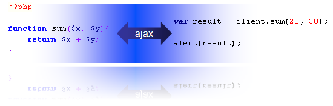
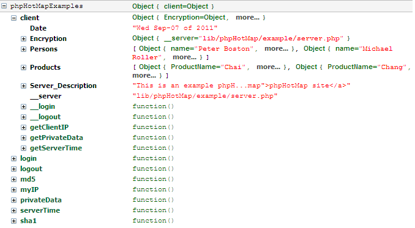

What is phpHotMap?
|
phpHotMap is an open source library for JavaScript and PHP, that allow mapping the PHP functions, static methods of classes and arbitrary data on the spot of the instance a JavaScript class. With this class you can call a functions and methods via AJAX. This library are compose of two files:
|
 |
Downloads
| File name | Description | Size |
|---|---|---|
| phpHotMap-1.0.zip | phpHotMap library and examples | 18.5 Kb |
LicenseThis program is free software; you can redistribute it and/or modify it under the terms of the GNU General Public License as published by the Free Software Foundation. This program is distributed in the hope that it will be useful, but WITHOUT ANY WARRANTY; without even the implied warranty of MERCHANTABILITY or FITNESS FOR A PARTICULAR PURPOSE. See the GNU General Public License for more details. You should have received a copy of the GNU General Public License along with this program as the file LICENSE.txt; if not, please see http://www.gnu.org/licenses/old-licenses/gpl-2.0.txt. |
How to use phpHotMap?
phpHotMap can be use in two steps.
- The first step is publish the functions, methods and data in the
server side through instance of the phpHotMapServer
class located in the phpHotMap.php file.
You can also implement some util hooks.
Example:
- The second step is the use of phpHotMap.js
in the web page. You can create an instance of phpHotMapClient
and pass in the constructor the URL address of server where is located
the publication elaborated in the first step.
Example:
Workflow
The follow steps are the main phpHotMap workflow:
- [client] Instance phpHotMapClient
- [server] Instance phpHotMapServer
- [server] Build and publish the mapping
- [client] Login for private methods
- [server] Instance phpHotMapServer
- [server] Invoke authorization hook
- [client] Execute a method
- [server] Instance phpHotMapServer
- [server] Invoke check method access hook
- [server] Invoke before hook
- [server] Execute the method
- [server] Send result
- [server] Invoke after hook
- [client] Retrieve result
References
PHP Classes
phpHotMap - Static class with some util methods.
- checkMethodAccess($method): Check if current user can access to specific method.
- checkRangeIP($from, $to, $ip): Check IP address in IP range.
- getClientIPAddress(): Return the client IP address.
- getHTMLOf($mixed): Return a representative HTML of data.
- isArrayOfObject($arr): Return TRUE if $arr is an array of objects.
- isArrayOfArray($arr): Return TRUE if $arr is an array of arrays.
- isNumericList($arr): Return TRUE if $arr is an array of numbers.
- login($username, $password): Check user's credencials and start the session on server.
- logout(): End session on server.
- verifyAuth(): Verify authentication.
phpHotMapServer - Server mapping
- phpHotMapServer($server_name): Create an instance of phpHotMapServer with $server_name as name of the server.
- addData($var, $value): Add a variable to map.
- addMethod($name, $params, $params_complex, $security, $hosts, $description): Add a method to map.
- $name:The method name. For static methods use the following
sintax: classname::methodname,
- $params - Array of parameters's name. It can be a string with name separated by comas.
- $params_complex - Change the form of methods's call from
Javascript client. For exmaple:
$params_complex is FALSE you can do this:
var result = client.sum(10, 20);
And if $params_complex is TRUE fou can do this:
var result = client.sum({x: 10, y: 20});
- $security - TRUE for enable the security for method.
- $hosts - Array of hosts's IP address that can access to server.
- $description - Description of method.
- showFace() - Show a simple interface that show the server mapping.
- go() - Mapping or execute. Waiting for client call.
Javascript Classes
phpHotMap - Namespace of some methods.
- getXMLHttpRequestObject(): Return a XMLHTTPRequest JS object.
- ajax(params): Send an AJAX request and return the result as JSON.
- call(params): Call to a method on server.
- login(server, username, password): Login on server with specific user name and password.
- logout(): Logout from server.
phpHotMapClient - Client side
- Create a representative Javascript Object with some properties and methods based on mapping.
Hooks
A hook is a function that intercept the workflow of phpHotMap in one point. The following hooks can be implement:
- phpHotMap_before($method): Before execute
a method.
Example:
- phpHotMap_after($method): After execute a method.
- phpHotMap_chkma($user, $method): Check method access for a user.
- phpHotMap_auth($user, $password): Login on server.
Example:
Example:
Example:
Constants
This library contains some constants that can be returned by the methods of phpHotMap and phpHotMapServer classes.
- PHP_HOT_MAP_ACCESS_DENIED_HOST: Access denied for a client host.
- PHP_HOT_MAP_ACCESS_DENIED_USER: Access denied for a user.
- PHP_HOT_MAP_LOGIN_SUCCESSFUL:Login successful for a user.
- PHP_HOT_MAP_LOGIN_FAILED: Login failed for a user.
- PHP_HOT_MAP_LOGOUT_SUCCESSFUL: Logout successful for a user.
- PHP_HOT_MAP_METHOD_EXECUTED: Method execute successful.
- PHP_HOT_MAP_METHOD_NOT_EXISTS: Method not exists.
- PHP_HOT_MAP_METHOD_STOPPED: The method was stopped.
- PHP_HOT_MAP_MAPPING_SUCCESSFUL: Mapping successful.
- PHP_HOT_MAP_INTERFACE_SHOW_SUCCESSFUL: Interface are showed successful.
Live example
By default, when you access to the server script from the browser, the method go() show a web interface with information about the mapping. You can see the interface for this live example.
If you use Mozilla Firefox Browser, you can install the Firebug Plugin and see the content of mapping. The follow image show the mapping of this live example in Firebug:

Now you cant testing the library in this site. Click on the buutons to see results.
phpHotMap is a Social Project of Pragres